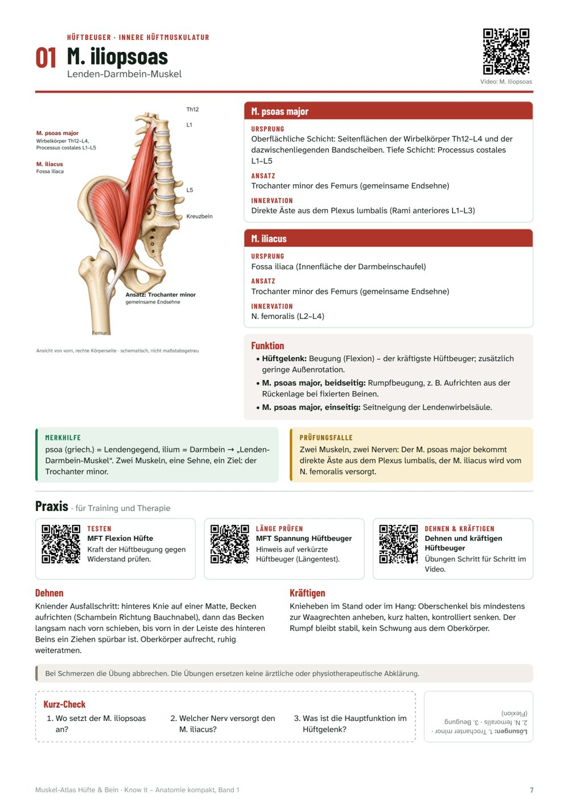
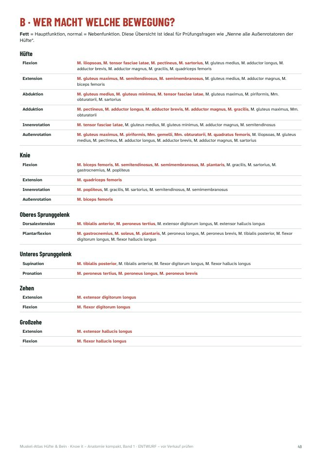
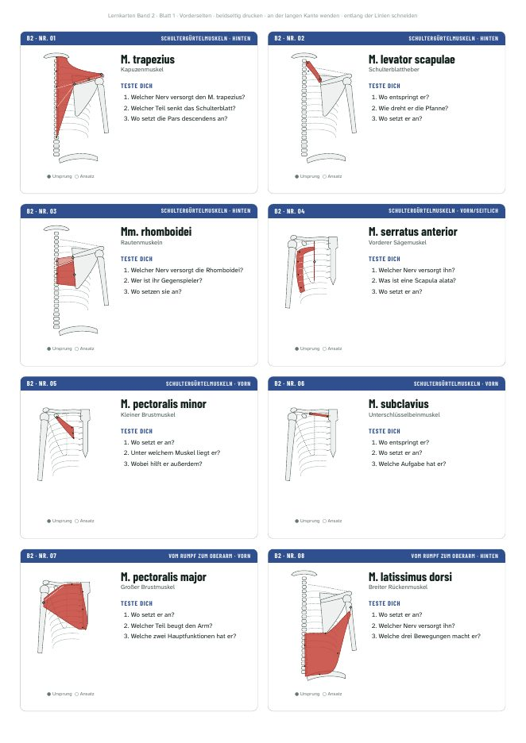

Band 1
Muskel-Atlas Hüfte & Bein
Alle 32 Muskeln von Hüfte, Oberschenkel und Unterschenkel mit Ursprung, Ansatz, Innervation und Funktion – mit Schemazeichnungen, Merkhilfen …
19,90 €Leseprobe
Anatomie · Physiologie · Training · Ernährung
Sieben E-Books, die Prüfungswissen so aufbereiten, wie du es lernst: eine Seite pro Muskel, eine Doppelseite pro Gelenk und Thema – mit eigenen Zeichnungen, Merkhilfen, Prüfungsfallen, Lernkarten und QR-Codes zu den Videos.
In 5 Sekunden
Die Reihe „Anatomie kompakt“
Für Sportwissenschaft, Physiotherapie, Medizin und Trainer:innen-Ausbildungen. Jeder Band mit Selbsttest-Fragen und Lösungen – und einer kostenlosen Leseprobe.
Alle 32 Muskeln von Hüfte, Oberschenkel und Unterschenkel mit Ursprung, Ansatz, Innervation und Funktion – mit Schemazeichnungen, Merkhilfen …
Alle 38 Muskeln von Schultergürtel, Schulter, Oberarm und Unterarm mit Ursprung, Ansatz, Innervation und Funktion – mit Schemazeichnungen …
Alle 42 Muskeln von Bauch, Rücken, Atmung, Nacken, Hals und Beckenboden mit Ursprung, Ansatz, Innervation und Funktion – mit Schemazeichnungen …
Bau, Bänder, Stabilität und typische Verletzungen aller großen Gelenke – von Schulter und Hand über Wirbelsäule und Becken bis Knie und Fuß. 14 …
Knochen und Skelett, Muskelkontraktion und Fasertypen, Herz, Kreislauf, Blut, Atmung, Verdauung, Niere, Wasser- und Wärmehaushalt – 20 Doppelseiten …
Anpassung und Trainingsprinzipien, Belastungsnormative, Kraft, Ausdauer, Schnelligkeit, Beweglichkeit, Koordination, Regeneration und …
Energie und Nährstoffe, Verdauung, Vitamine und Mineralstoffe, Wasser, Körperzusammensetzung, Ernährungsformen und Sporternährung – 20 Doppelseiten …
Alle 7 Bände der Reihe „Anatomie kompakt“
Die ganze Reihe für Studium und Ausbildung: alle Muskeln, Gelenke, Skelett und Organe, Trainingslehre und Ernährung.
79,90 € 131,30 € Du sparst 51,40 €


Für die Anatomie-Prüfung
Die drei Muskel-Atlanten zusammen – jeder Muskel des Bewegungsapparats von Bein, Arm, Rumpf und Hals auf einer Seite, mit Lernkarten zum Ausdrucken.
44,90 € 59,70 €
Ein Blick ins Buch




Wer weiß, wo ein Muskel beginnt, wo er ansetzt und über welches Gelenk er zieht, leitet die Funktion ab.
Merkhilfen und typische Prüfungsfallen zu jedem Muskel, dazu Fragen zum Selbsttest mit Lösungen.
QR-Codes führen zu den passenden Videos des Kanals – Funktionstests und Übungen inklusive.
Zum Ausdrucken und Ausschneiden: vorne Zeichnung und Fragen, hinten die Antworten.
Kostenlos lernen
Alle 112 Muskeln mit Zeichnung im Lexikon, Lernkarten zum Abfragen direkt im Browser und ein Lernplan bis zur Prüfung.
Über mich
Ich bin David Jungreithmayr, Sportwissenschafter und Sporttherapeut – unter anderem beim FK Austria Wien und bei der U18-Handball-Nationalmannschaft. Heute unterrichte ich an einer AHS in Wien und an der Universität Wien. Viele von euch haben nach einer Zusammenfassung zum Ausdrucken gefragt – daraus ist die Reihe „Anatomie kompakt“ entstanden.
Mehr über michDirekt nach der Zahlung erscheint der Download-Link auf der Bestätigungsseite, und du bekommst ihn zusätzlich per E-Mail von Digistore24. Das PDF funktioniert auf Handy, Tablet und Laptop.
Der Verkauf läuft über Digistore24 (Digistore24 GmbH, Hildesheim) als Wiederverkäufer. Digistore24 kümmert sich um Zahlung, Rechnung und Umsatzsteuer; du kannst mit den üblichen Zahlungsarten wie PayPal, Kreditkarte oder Lastschrift bezahlen.
Ja. Das Muskel-Atlas-Paket enthält die Bände 1 bis 3 (alle 112 Muskeln) für 44,90 € statt 59,70 €, das Komplettpaket alle sieben Bände für 79,90 € statt 131,30 €.
Ja. Jeder Muskel steht auf genau einer Seite, jedes Gelenk und jedes Thema auf einer Doppelseite – du kannst also genau die Seiten ausdrucken, die du gerade lernst, und dir Notizen dazuschreiben.
Die Lizenz gilt für dich persönlich. Bitte gib das PDF nicht weiter und lade es nicht in Gruppen-Chats oder Lernplattformen hoch – jede:r aus der Lerngruppe kann sich die kostenlose Leseprobe ansehen.
Ja, kostenlos: Im Muskel-Lexikon stehen Ursprung, Ansatz, Innervation und Funktion aller 112 Muskeln, und mit den Lernkarten fragst du dich selbst ab – dein Lernstand bleibt auf deinem Gerät gespeichert.
Starte mit der kostenlosen Leseprobe – oder hol dir gleich alle sieben Bände.